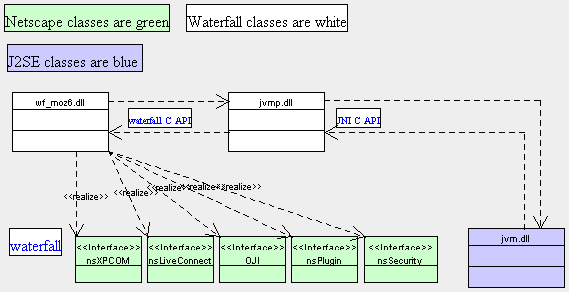
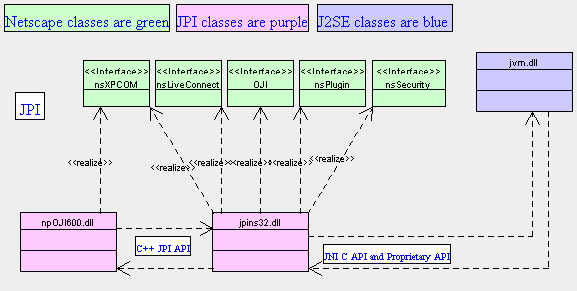

This document describes the benefits of waterfall. This diagram illustrates the allocation of dependencies to dlls in both the Java Plugin (JPI) and waterfall.  You can see from the above diagram that all the browser specific dependencies are located in the wf_moz6.dll. wf_moz6.dll communicates to the jvmp.dll through the well defined waterfall C api. jvmp.dll communicates to the Java environment through the well defined JNI C api.  The Java Plugin has browser specific dependencies in both npoji600.dll and in jpins32.dll. jpins32.dll communicates with the Java environment throug the well defined JNI C api and some additional proprietary APIs. Thus, a change in any of the netscape interfaces impacts the java plugin very deeply, where with waterfall, the change is isolated to one module.